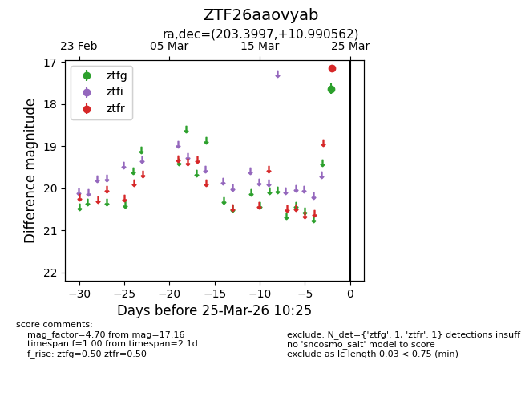
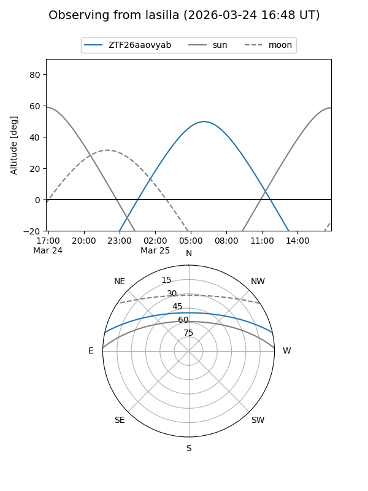
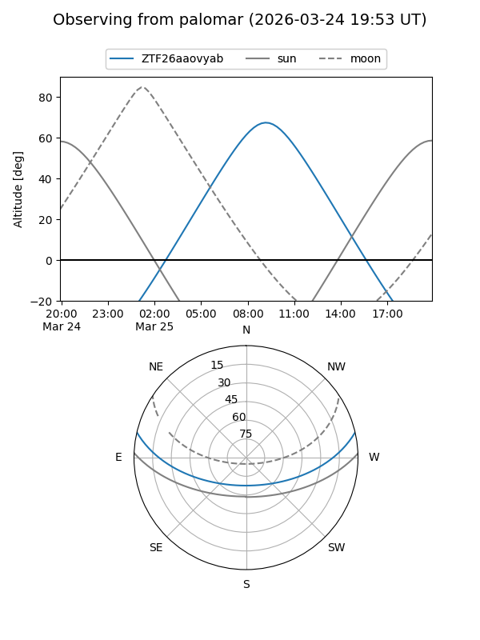

ZTF26aaovyab
Target ZTF26aaovyab at 2026-03-25 10:28
Aliases and brokers:
FINK: link
Lasair: link
ALeRCE: link
alt names
ZTF26aaovyab (ztf,fink_ztf)
Coordinates:
equatorial (ra, dec) = 203.3997,+10.99056
equatorial (HMS+DMS) = 13:33:35.93,+10:59:26.02
galactic (l, b) = (336.5204,+71.05928)
Flags:
Photometry:
last ztfg=17.63, ztfr=17.16
1 ztfg, 1 ztfr detections
Lightcurve

Visibility


Additional plots